We want to implement an algorithm for solving uncostrained optimisation problems of the form:
\[ \min_{x \in \mathbb{R}^n} f(x) \qquad f(x) \in \mathcal{C}^1 \]
when the objective function \(f(x)\) and its gradient, \(\nabla f(x)\), are known.
We start with an initial guess, \(x_0\), and perform the iteration:
\[ x_{k+1} = x_k + \alpha_k d_k = x_k - \alpha_k \nabla f(x_k) \]
Where:
\[ \begin{aligned} & d_k = -\nabla f(x_k) && \text{is the descent direction} \\ &\alpha_k && \text{is the step size in iteration $k$} \\ \end{aligned} \]
This iteration gives us a monotonic sequence which converges to a local minimum, \(f(x^*)\), if it exists:
\[ f(x_0) \geq f(x_1) \geq f(x_2) \geq \cdots \geq f(x^*) \]
The algorithm is repeated until the stationarity condition is fulfilled:
\[ \nabla f(x) = 0 \]
Numerically, this condition is fulfilled if:
\[ \| \nabla f(x_{k+1}) \| \leq \epsilon \]
Where \(\|\cdot\|\) denotes the Euclidean norm:
\[ \|x\| = \sqrt{\langle x,x \rangle} \]
R Implementation.The function steepestDescent() takes the following
arguments:
f: objective function to minimise.g: gradient of the objective function.x0: initial point to begin the gradient descent.stepsize: \(\alpha\),
the step size or learning rate.
fixed.stepsize: boolean indicating whether to use
optimal stepsize method.max.stepsize: the maximum stepsize allowed.iterations: maximum number of iterations to perform, to
prevent infinite runtime for non-convergent functions.tol: numerical tolerance level for checking
stationarity (default is the square-root of the local machine
epsilon).We include the following libraries:
lattice: for plotting the objective functions.compiler: to byte-compile the function to improve
efficiency.library(lattice)
library(compiler); enableJIT(3) # Enable Just-In-Time compiling.## [1] 3For the stepsize, we can either use a fixed \(\alpha\), or we can find an optimal \(\alpha\) based on the following Limited
Minimisation Rule algorithm:
\[ f(x_k + \alpha_k d_k) = \min_{\alpha \in [0,s]} f(x_k + \alpha d_k) \]
This generally requires \(\alpha\)
to be found numerically, thus we use the base R function
optimize().
Using the optimal stepsize method, we find that in most cases it dramatically decreases the number of iterations required to converge to the minimum.
When using the optimal stepsize, by the Zig-Zag Theorem, for all \(k\):
\[ \langle x_{k+1} - x_{k}, x_{k+2} - x_{k+1}\rangle = 0 \]
In the case of a convex function the algorithm will return the optimal minimiser given any finite starting value. This may not be the case for functions with multiple local minima, and the choice of initial starting point will determine the minima.
A way around this, or at least to reduce the chance of finding a non-optimal minima, is the colloquially termed “shotgun” gradient descent, which essentially means running the algorithm a number of times with different starting points such that the optimal minima is more likely to be found.
steepestDescent <- function(
# FUNCTION ARGUMENTS: ------------------------------------------------------
f, g, x0,
fixed.stepsize = TRUE,
max.stepsize = 1.0,
stepsize = 0.01,
iterations = 10000,
tol = sqrt(.Machine$double.eps)) {
# WARNINGS/ERRORS: ---------------------------------------------------------
if ( !is.numeric(x0) ) stop("Initial point vector must be numeric.")
if ( tol <= 0 ) stop("Tolerance must be positive.")
if ( !is.function(f) ) stop("Objective function not provided.")
if ( !is.function(g) ) stop("Gradient not provided.")
# LOCAL FUNCTIONS: ---------------------------------------------------------
isStationary <- function(x, tol) return( sqrt(sum(x*x)) < tol )
# ASSIGN FUNCTIONS: --------------------------------------------------------
f <- match.fun(f)
g <- match.fun(g)
# PRE-ALLOCATE STORAGE; INITIALISE A COUNTER: ------------------------------
n <- length(x0)
k <- 1
X <- matrix(NA, nrow = n, ncol = iterations)
X[,k] <- x0
grad <- g(X[,k])
# PERFORM ITERATIVE GRADIENT DESCENT: --------------------------------------
# Optimal stepsize: --------------------------------------------------------
if( fixed.stepsize == FALSE ) {
while ((k < iterations) && !isStationary(g(X[,k]), tol)) {
stepsize <- optimize( function(a) f( X[,k] - a * grad ),
interval = c(0, max.stepsize) )$min
grad <- g(X[,k])
X[,k+1] <- X[,k] - stepsize * grad
k <- k + 1
}
X <- X[,1:k]
}
# Fixed stepsize: ----------------------------------------------------------
else {
while ((k < iterations) && !isStationary(g(X[,k]), tol)) {
grad <- g(X[,k])
X[,k+1] <- X[,k] - stepsize * grad
k <- k + 1
}
X <- X[,1:k]
}
ifelse( n == 1,
return( list(minimum = X[k], points = X, iterations = k) ),
return( list(minimum = X[,k], points = X, iterations = k) ))
}
# BYTE-COMPILE THE FUNCTION: ---------------------------------------------------
steepestDescent <- compiler::cmpfun(steepestDescent)In the following we will feed the algorithm different functions and gradually increase the complexity of the task. We will test famous functions such as the Rosenbrock; Rastrigin and Himmelblau’s function.
\[ f(x) = (x-5)^2 \] \[ \text{Strict global minimum at: } x = 5\\ \]
FUNC <- function(x) return( (x - 5)^2 )
GRAD <- function(x) return( 2 * (x - 5) )
x0 <- 10
MIN1 <- steepestDescent(FUNC, GRAD, x0 = x0, stepsize = 0.05)
MIN2 <- steepestDescent(FUNC, GRAD, x0 = x0, fixed.stepsize = F)
MIN1[c(1,3)] # Global## $minimum
## [1] 5
##
## $iterations
## [1] 194MIN2[c(1,3)] # Global## $minimum
## [1] 5
##
## $iterations
## [1] 2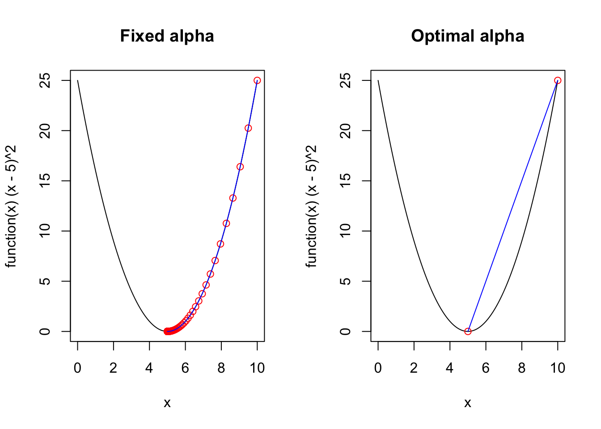
\[ f(x,y) = x^2 + \frac{y^2}{3} - 5 \]
\[ \text{Strict global minimum at: } (x,y) = (0,0) \\ \]
FUNC <- function(x) {return(x[1]^2 + 1/3*x[2]^2 - 5)}
GRAD <- function(x) {return(2*x[1] + 2/3*x[2])}
x0 <- c(-1.9,-1.9)
MIN1 <- steepestDescent(FUNC, GRAD, x0=x0, stepsize = 0.001)
MIN2 <- steepestDescent(FUNC, GRAD, x0=x0, fixed.stepsize = F)
MIN1[c(1,3)] # correct## $minimum
## [1] -5.585915e-09 -5.585915e-09
##
## $iterations
## [1] 7358MIN2[c(1,3)] # correct## $minimum
## [1] -2.220446e-16 -2.220446e-16
##
## $iterations
## [1] 2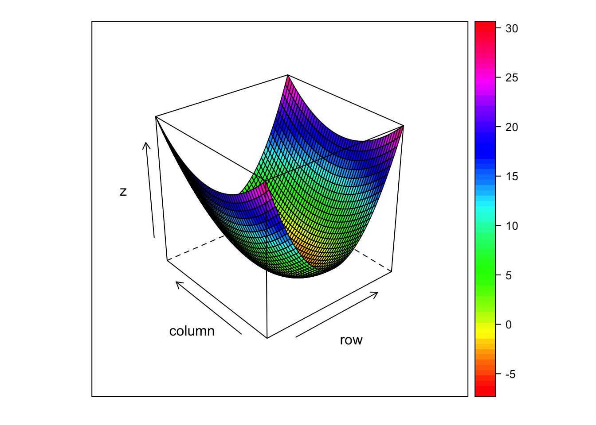
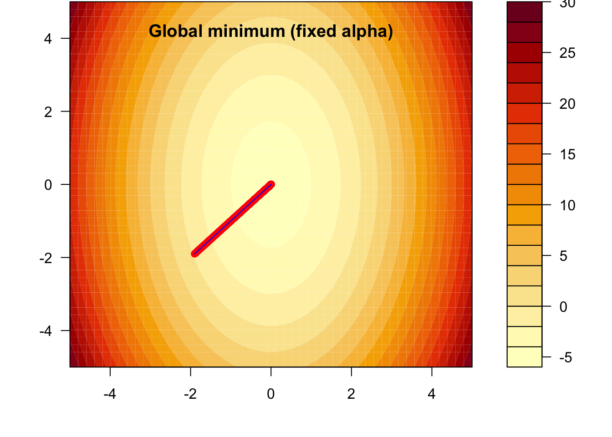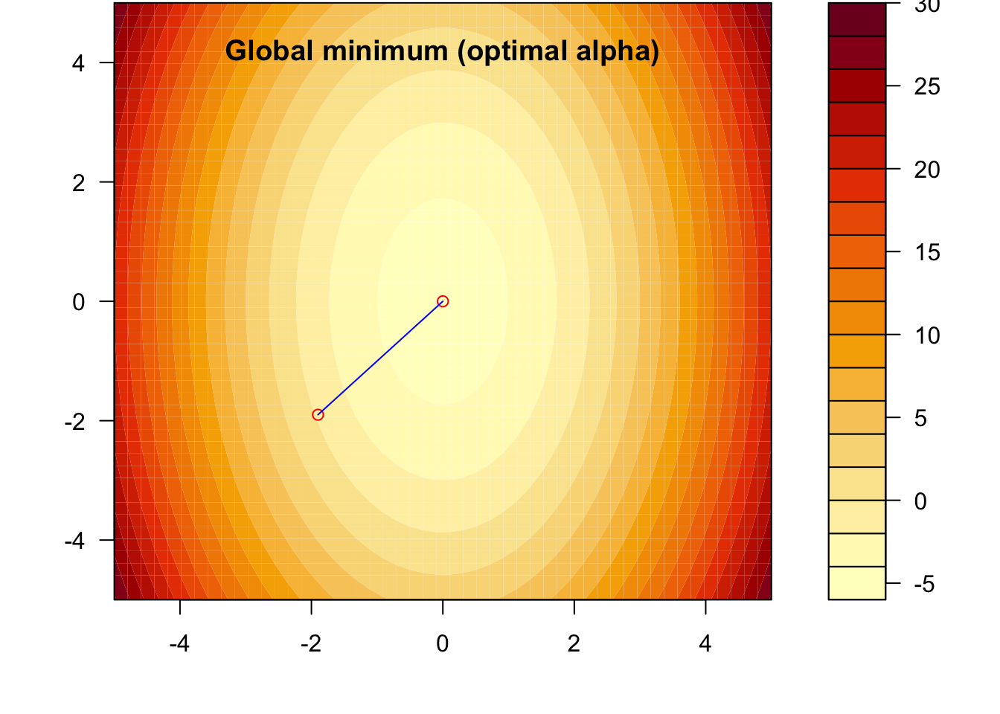
\[ f(x,y,z) = x^2 + 2y^2 + 3z^2 + 2xy + 2xz \]
\[ \text{Minimum at: } (x,y,z) = (0,0,0) \]
FUNC <- function(x) {
x[1]^2 + 2*x[2]^2 + 3*x[3]^2 + 2*x[1]*x[2] + 2*x[1]*x[3]
}
GRAD <- function(x) {
c(2*x[1] + 2*x[2] + 2*x[3],
4*x[2] + 2*x[1],
6*x[3] + 2*x[1])
}
x0 <- c(1,2,3)
steepestDescent(FUNC, GRAD, x0 = x0)[c(1,3)]## $minimum
## [1] -5.208267e-08 2.771261e-08 1.808812e-08
##
## $iterations
## [1] 6846We are unable to plot 4-dimensional plots and can thus not illustrate this case visually.
\[ f(x,y) = \frac{x^4}{200} - \frac{x^3}{10} +3x - xy+y^2 \]
\[ \begin{aligned} \text{Global minimum: } (x,y) &\approx (15.9771, 7.98856) \\ \text{Local minimum: } (x,y) &\approx (-3.59132, -1.79566) \\ \end{aligned} \]
FUNC <- function(x) {
x[1]^4/200 - x[1]^3/10 + 3*x[1] - x[1]*x[2] + x[2]^2
}
GRAD <- function(x) {
c(4*x[1]^3/200 - 3*x[1]^2/10 + 3 - x[2],
- x[1] + 2*x[2])
}
# Fixed stepsize
MIN1 <- steepestDescent(FUNC, GRAD, c(1,2), stepsize = 0.05)
MIN2 <- steepestDescent(FUNC, GRAD, c(10,10), stepsize = 0.05)
# Optimised stepsize
MIN3 <- steepestDescent(FUNC, GRAD, c(1,2), fixed.stepsize = F)
MIN4 <- steepestDescent(FUNC, GRAD, c(10,10), fixed.stepsize = F)
MIN1[c(1,3)] # Local## $minimum
## [1] -3.59132 -1.79566
##
## $iterations
## [1] 304MIN2[c(1,3)] # Global## $minimum
## [1] 15.97712 7.98856
##
## $iterations
## [1] 198MIN3[c(1,3)] # Local## $minimum
## [1] -3.59132 -1.79566
##
## $iterations
## [1] 37MIN4[c(1,3)] # Globa## $minimum
## [1] 15.97712 7.98856
##
## $iterations
## [1] 55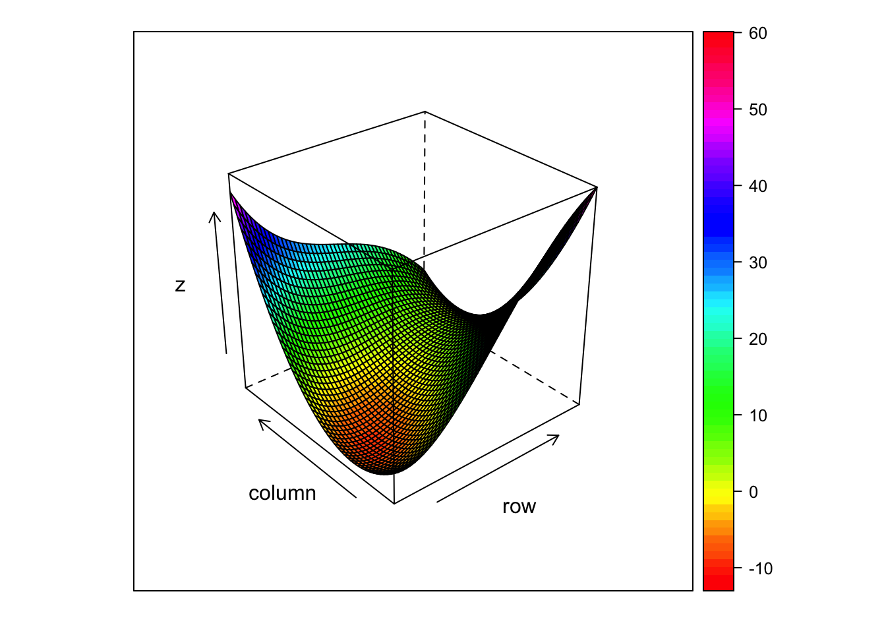
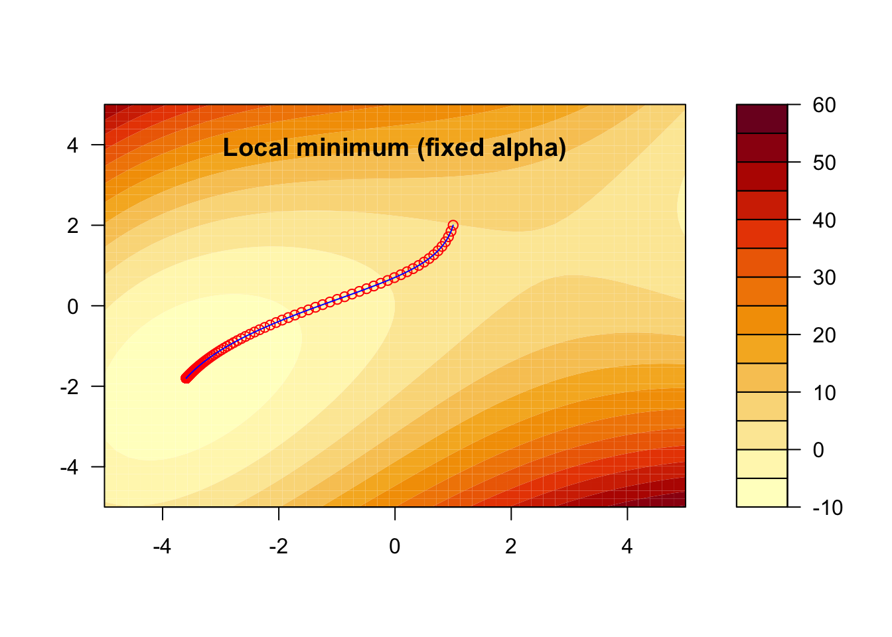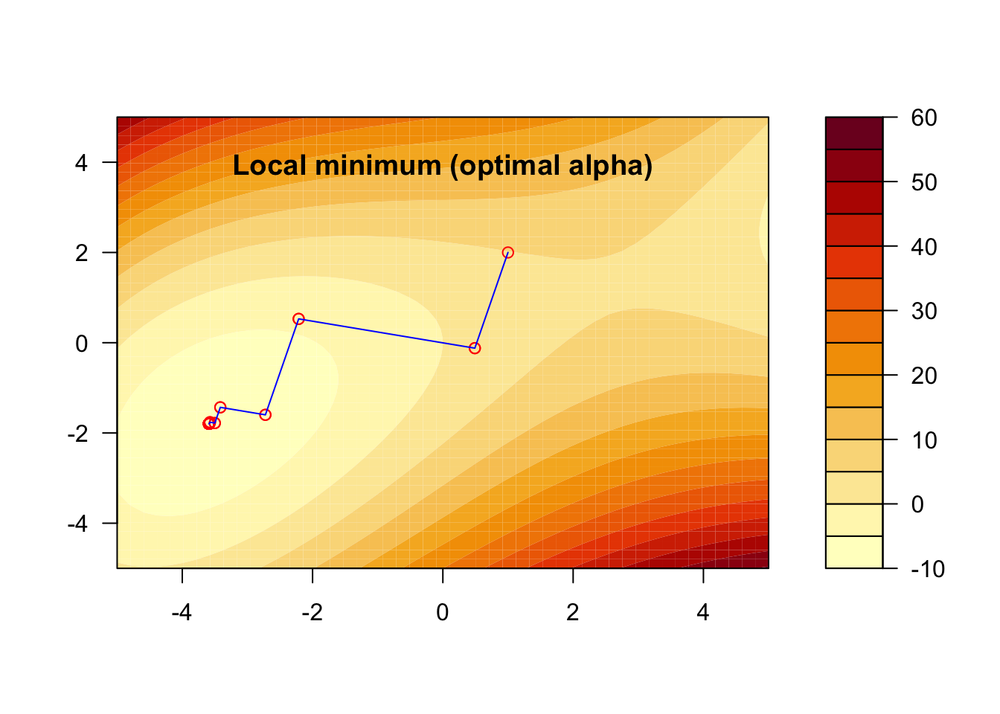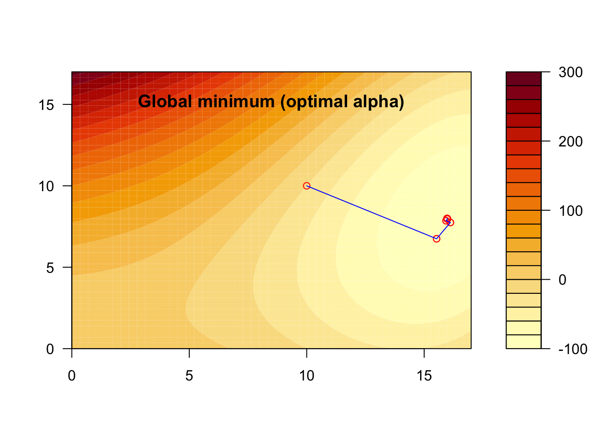
This function is used frequently in order to test the power of optimisation algorithms since finding the global optimum of this function can be quite challenging. Generally, it may not be hard for the algorithm to determine the approximate region where the global minimum is attained, yet converging to the exact global minimum can be problematic.
\[ f(x, y) = (a-x)^2+b(y-x^2)^2 \] The function has a global minimum at \((x,y) = (a, a^2)\) where \(f(x,y) = 0\). We set the parameters to \(a = 1, b = 100\), hence our global minimum is at \((x, y) = (1,1)\).
FUNC <- function(x) {
(1 - x[1])^2 + 100 * (x[2] - x[1]^2)^2
}
GRAD <- function(x) {
c(2 * (1-x[1]) - 400 * x[1] * (x[2] - x[1]^2),
200 * (x[2] - x[1]^2))
}
# Fixed stepsize
MIN1 <- steepestDescent(FUNC, GRAD, c(2, 2), stepsize = 0.001)
MIN2 <- steepestDescent(FUNC, GRAD, c(0.99, 0.99), stepsize = 0.001)
# Optimised stepsize
MIN3 <- steepestDescent(FUNC, GRAD, c(2, 2), fixed.stepsize = F)
MIN4 <- steepestDescent(FUNC, GRAD, c(0.99, 0.99), fixed.stepsize = F)
MIN1[c(1,3)] # Reached maximum iterations, not converging. ## $minimum
## [1] 1.528149 2.243863
##
## $iterations
## [1] 10000MIN2[c(1,3)] # Reached maximum iterations, not converging. ## $minimum
## [1] -0.4223657 0.1714116
##
## $iterations
## [1] 10000MIN3[c(1,3)] # Reached maximum iterations, not converging. ## $minimum
## [1] -1.968756 3.868919
##
## $iterations
## [1] 10000MIN4[c(1,3)] # Global## $minimum
## [1] 0.9921088 0.9843116
##
## $iterations
## [1] 10000While it does find some local stationary points, we see that the algorithm fails entirely for this non-convex function when looking for the global minimum. The algorithm continuously provides us with false results. When considering the starting value \(x_0 = (0.99, 0.99)\) the initial guess is in fact closer to the global minimum than the final result of the algorithm.
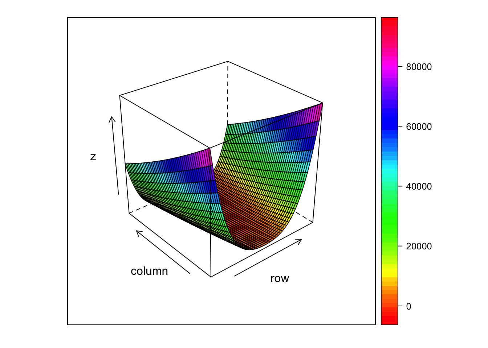
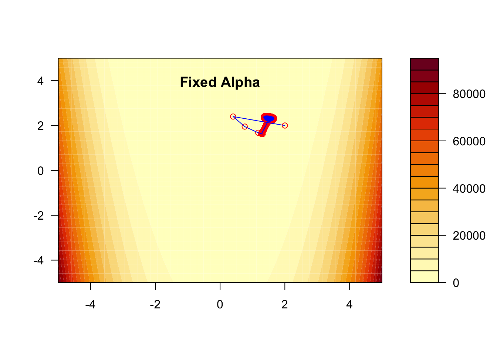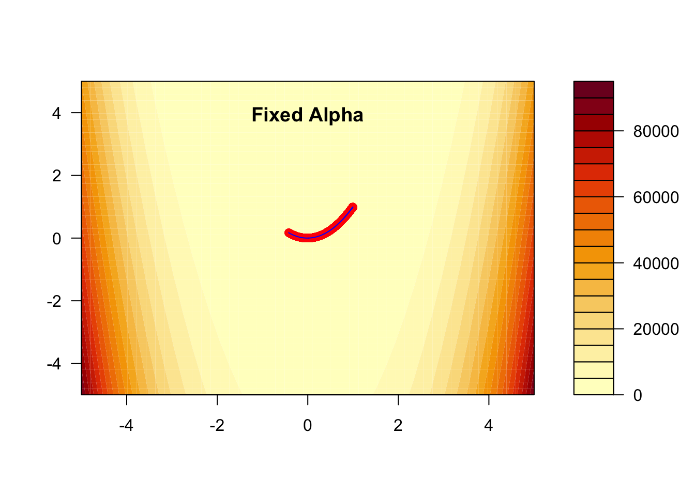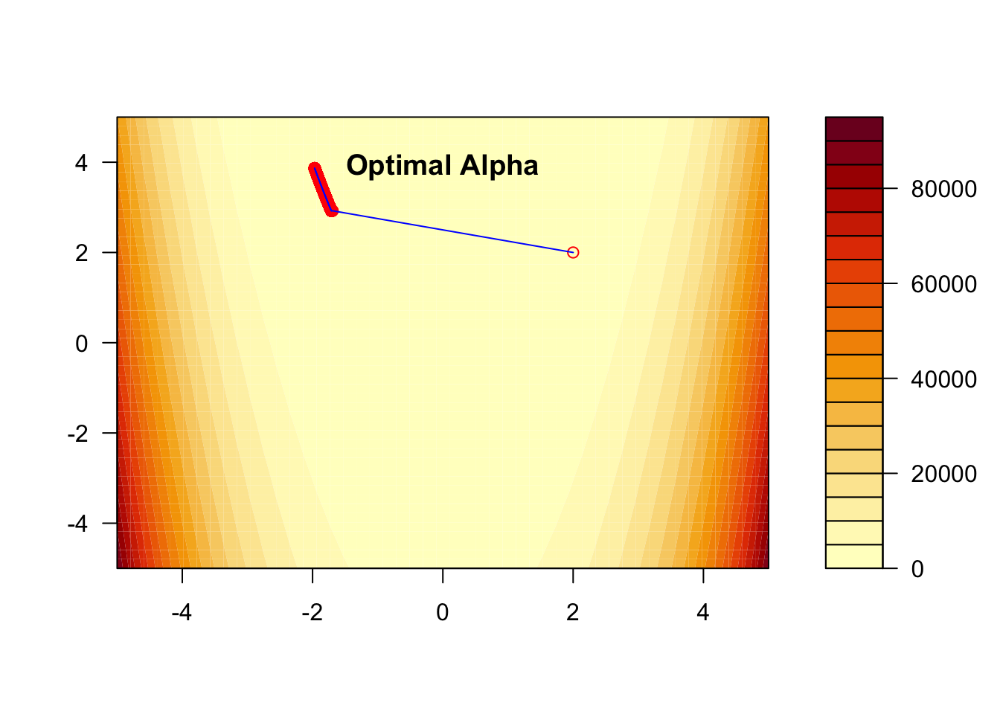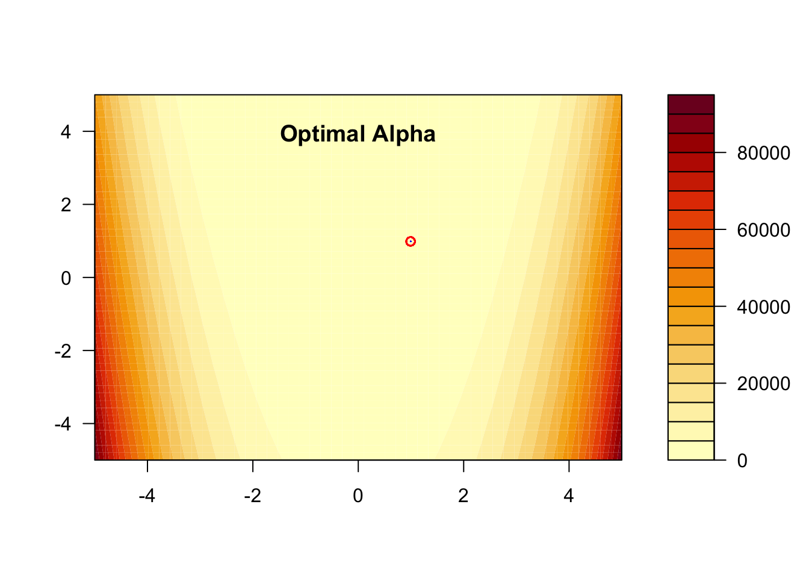
This is a particularly difficult function to optimise, even in two variables, as the plot below shows. There are many local minima, yet only one global minimum (the origin).
The search domain is typically \(x_i \in [-5.12, 5.12]\).
\[ f(\vec{x}) = An + \sum_{i=1}^n [x_i^2 - A\cos(2\pi x_i)] \]
Where \(A=10\) and \(n=2\):
\[ f(x) = 20 + [x_1^2 - 10\cos(2\pi x_1)] + [x_2^2 - 10\cos(2\pi x_2)] \]
\[ \text{Global minimum: } f(0,0) = 0 \\ \]
FUNC <- function(x) {
20 + x[1]^2 - 10*cos(2*pi*x[1]) + x[2]^2 - 10*cos(2*pi*x[2])
}
GRAD <- function(x) {
c( 2*(x[1] + 10*pi*sin(2*pi*x[1])),
2*(x[2] + 10*pi*sin(2*pi*x[2])))
}
# Fixed stepsize
MIN1 <- steepestDescent(FUNC, GRAD, c(1.5,1.5), stepsize = 0.005)
MIN2 <- steepestDescent(FUNC, GRAD, c(-0.35,-0.35), stepsize = 0.005)
# Optimised stepsize
MIN3 <- steepestDescent(FUNC, GRAD, c(1.5,1.5), fixed.stepsize = F)
MIN4 <- steepestDescent(FUNC, GRAD, c(-0.35,-0.35), fixed.stepsize = F)
MIN1[c(1,3)] # Local## $minimum
## [1] 0.9949586 0.9949586
##
## $iterations
## [1] 1163MIN2[c(1,3)] # Global## $minimum
## [1] 2.616849e-11 2.616849e-11
##
## $iterations
## [1] 1293MIN3[c(1,3)] # Local## $minimum
## [1] 0.9949586 0.9949586
##
## $iterations
## [1] 75MIN4[c(1,3)] # Local## $minimum
## [1] 0.9949586 0.9949586
##
## $iterations
## [1] 13We see that the algorithm is unable to detect the correct global minimum in most cases. This function provides us with a very interesting insight. The same starting value lead to a correct result in the case of a fixed stepsize, and an incorrect result for the optimal stepsize.
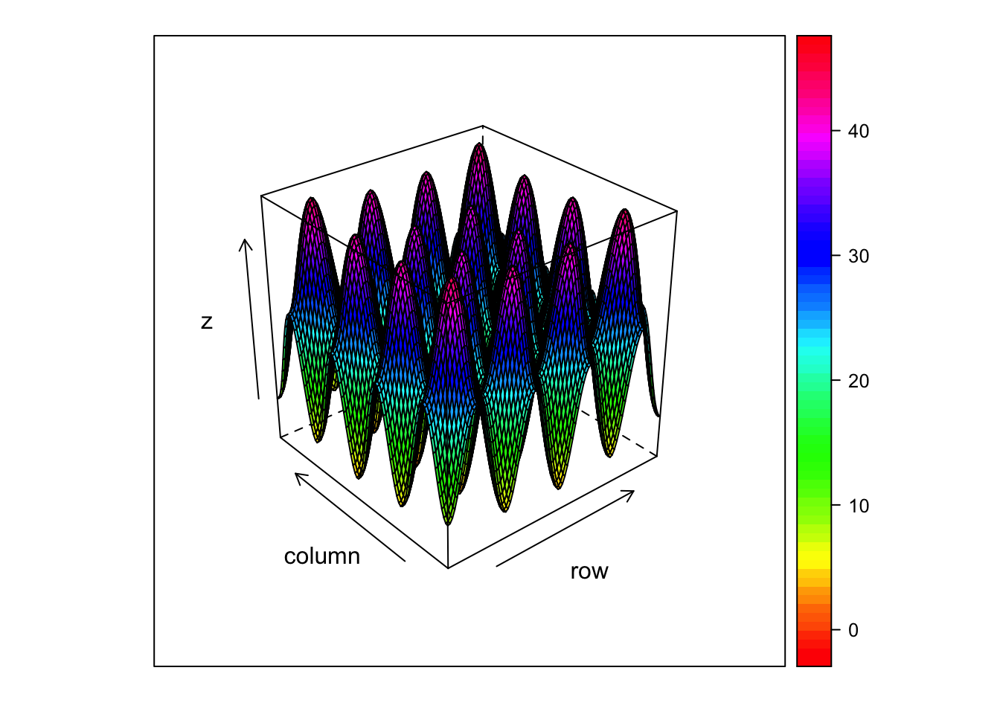
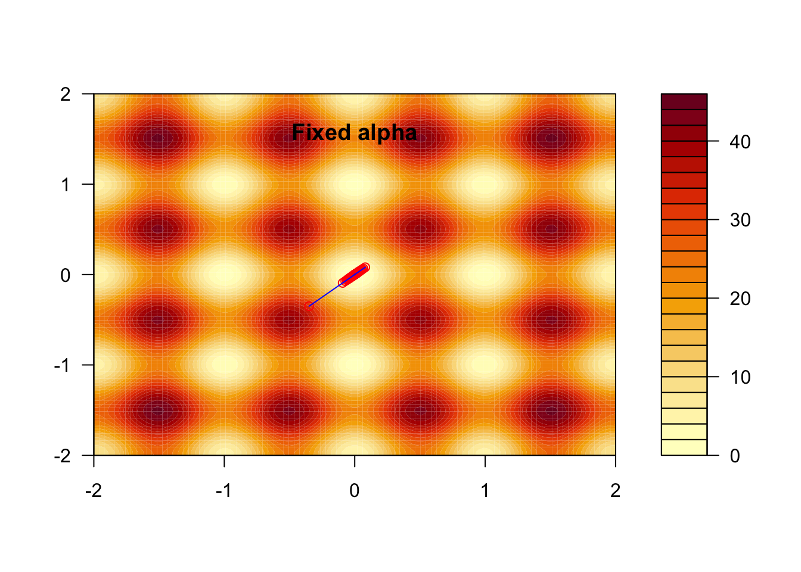
This multi-modal function is defined as:
\[f(x, y) = (x^2+y-11)^2+(x+y^2-7)^2\]
and has one local maximum at \((x,y) = (-0.270845, -0.923039)\) where the function value is \(f(x,y) = 181.617\), and four identical local minima:
This case is especially interesting as different starting values may lead to different local minima.
FUNC <- function(x) {
(x[1]^2 + x[2] - 11)^2 + (x[1] + x[2]^2 - 7)^2
}
GRAD <- function(x) {
c(4 * x[1] * (x[1]^2 + x[2] - 11) + 2 * (x[1] + x[2]^2 - 7),
2 * (x[1]^2 + x[2] - 11) + 4* x[2] * (x[1] + x[2]^2 - 7))
}
# Fixed stepsize
MIN1 <- steepestDescent(FUNC, GRAD, c(0.5,0.5), stepsize = 0.005)
MIN2 <- steepestDescent(FUNC, GRAD, c(-1,1), stepsize = 0.005)
MIN3 <- steepestDescent(FUNC, GRAD, c(-0.5, -1), stepsize = 0.005)
MIN4 <- steepestDescent(FUNC, GRAD, c(0.5,-2), stepsize = 0.005)
# Optimised stepsize
MIN5 <- steepestDescent(FUNC, GRAD, c(0.5,0.5), fixed.stepsize = F)
MIN6 <- steepestDescent(FUNC, GRAD, c(-1,1), fixed.stepsize = F)
MIN7 <- steepestDescent(FUNC, GRAD, c(-0.5, -1), fixed.stepsize = F)
MIN8 <- steepestDescent(FUNC, GRAD, c(0.5,-2), fixed.stepsize = F)
MIN1[c(1,3)] # correct## $minimum
## [1] 3 2
##
## $iterations
## [1] 151MIN2[c(1,3)] # correct## $minimum
## [1] -2.805118 3.131313
##
## $iterations
## [1] 67MIN3[c(1,3)] # correct## $minimum
## [1] -3.779310 -3.283186
##
## $iterations
## [1] 71MIN4[c(1,3)] # correct## $minimum
## [1] 3.584428 -1.848127
##
## $iterations
## [1] 137MIN5[c(1,3)] # correct## $minimum
## [1] 3 2
##
## $iterations
## [1] 34MIN6[c(1,3)] # correct## $minimum
## [1] -2.805118 3.131313
##
## $iterations
## [1] 22MIN7[c(1,3)] # correct## $minimum
## [1] -3.779310 -3.283186
##
## $iterations
## [1] 41MIN8[c(1,3)] # correct## $minimum
## [1] 3.584428 -1.848127
##
## $iterations
## [1] 18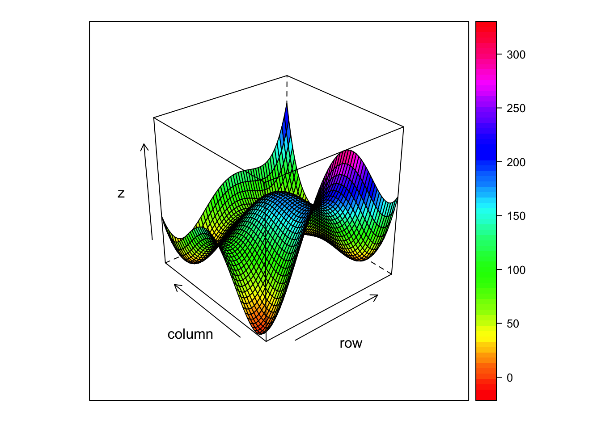
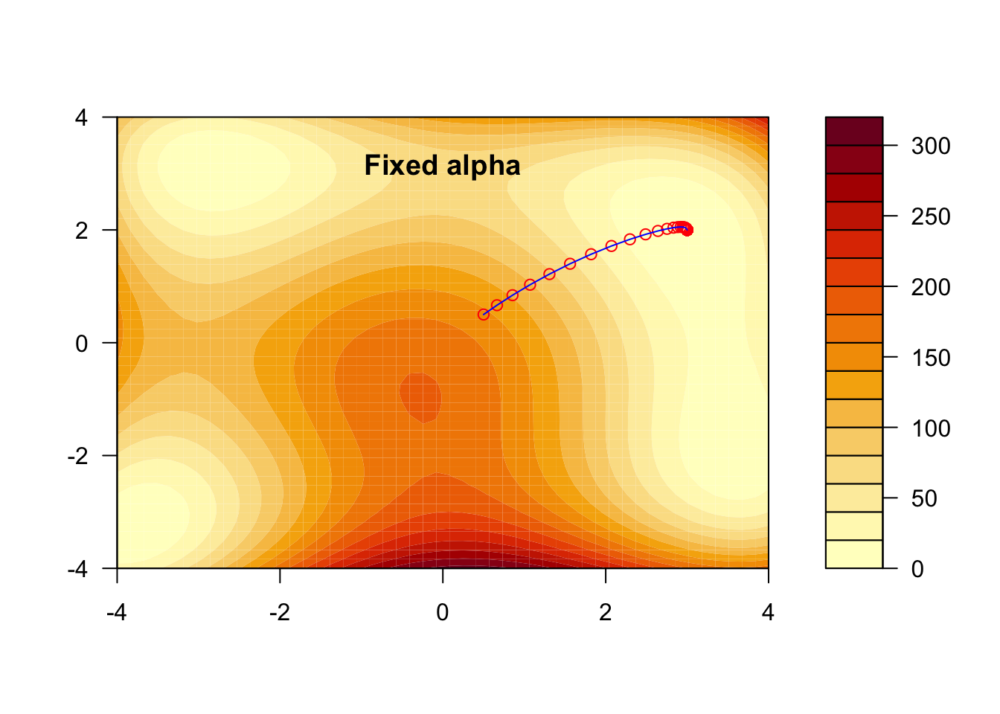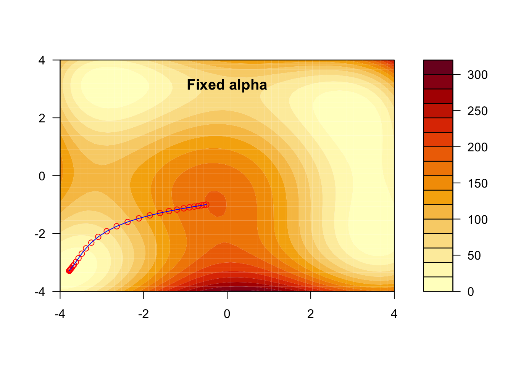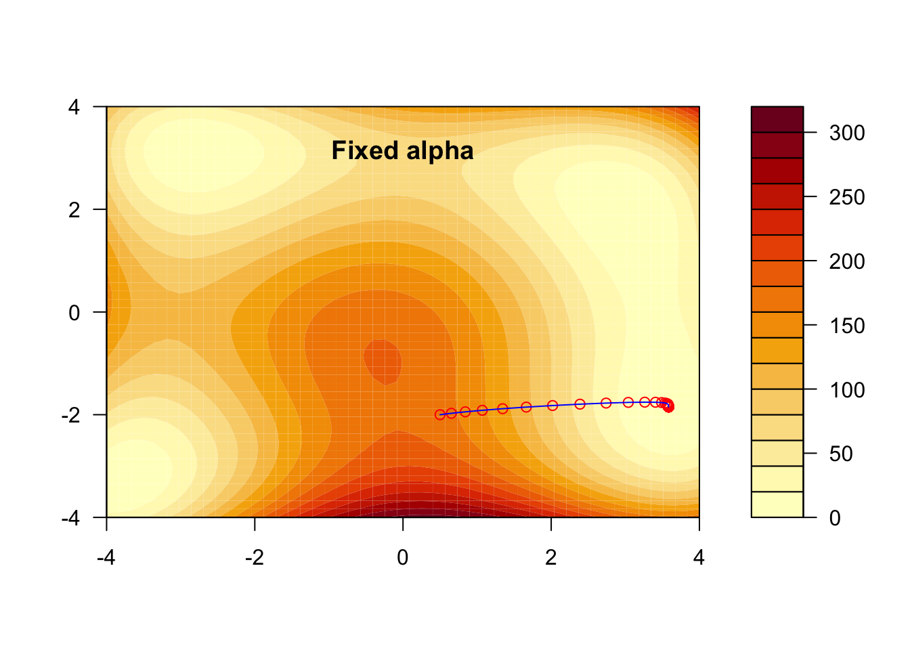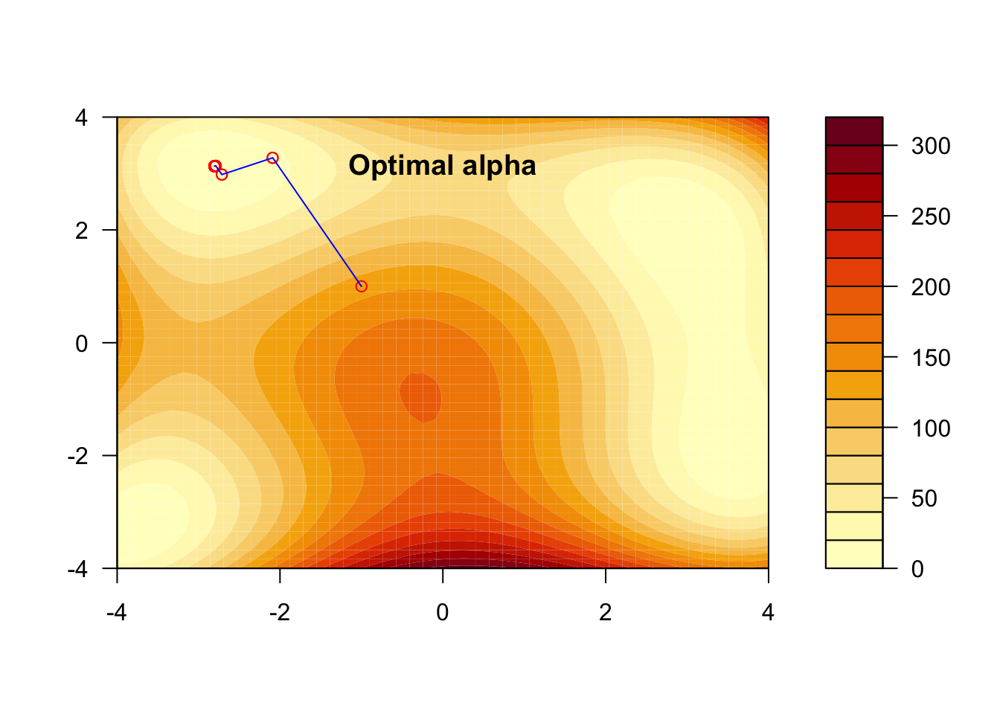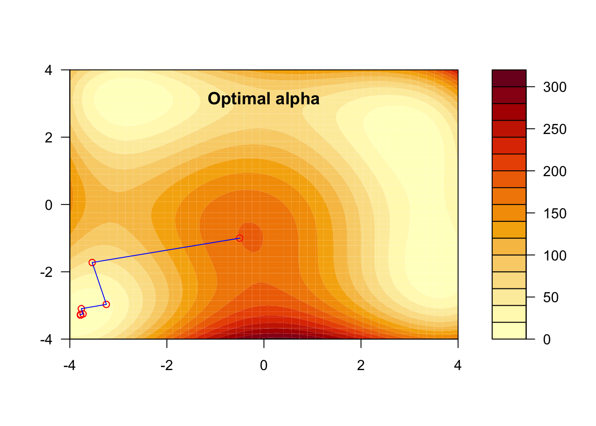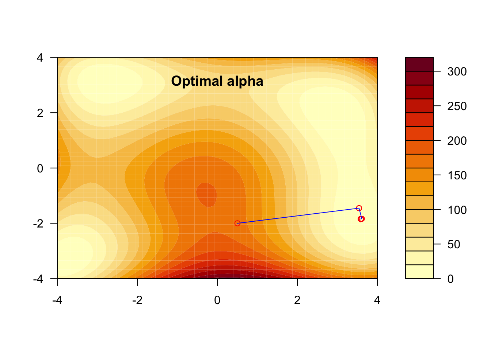
Summarizing we find that the algorithm works very well for most functions, often times requiring only a few iterations until finding the global optimum. The algorithm was successful in determining all four local minima for the famous mutimodal Himmelblau’s Function.
The Rastrigin function required a very educated guess for the initial point in order to find the global minimum due to there being so many local minima in close proximity.
The Rosenbrock function was an exception, and would often lead to misleading results due to the fact that big regions of the function are so close to being flat, but not quite, that the function would determine stationarity when in fact it was not a minimum.
Another observation was that using a fixed stepsize almost always converged to a local or global minimum. However, sometimes in testing, the use of the optimal stepsize sometimes returned an initial stepsize that would overshoot and lead to a non-convergence of the function, or overshoot a global minimum and return a local minimum instead. Nevertheless, use of the optimal stepsize would generally result in a much faster convergence as expected.